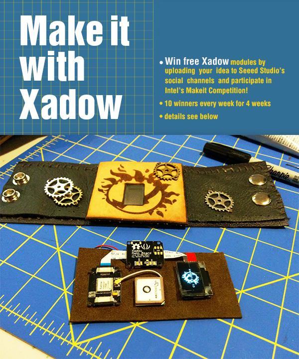

In support of the Intel Makeit Competition, Seeed Studio is giving away FREE Xadow modules from 3/10 to 4/4 for you to prototype the next big idea in wearable technology. To participate, upload your project idea and outline the Xadow modules needed to any of Seeed Studio’s social channels, tag: #MakeitWearable with #Xadow, and @seeedstudio. You can use flickr, twitter, vine, youtube, instagram, google+, facebook, or email us directly at getxadow@gmail.com. We will select ten winners each week and post them on our blog! Follow our blog to check if you’ve won!
After the confirmation, the selected winner must create a project page on seeed studio wiki to update the project and implement the idea raised by yourself. We will send out the modules
Here is an example for you.
Hi: If you are not familiar with Wiki, please tell us and we will write howto for you
Wearable technology (wearables for short) is a device that is worn and controlled by the user to augment knowledge, enhance experience, or improve lifestyle. This industry started to grow when Pebble raised over ten million on Kickstarter, and has continued to gain popularity with Google Glass and rumors for Apple’s iWatch. Currently there are 127 products, with average price $389. Applications of wearables span medical, fitness, gaming, lifestyle, and entertainment areas, and you can learn more about it here
If you’re as excited about wearables as we are, you should enter the Intel Makeit Competition! If you win, you will receive help to bring your ideas to the market, and make your imagination a reality. For more information, please see the official website: (link here)
Xadow is an Arduino compatible board based on the Atmega32U4 chip. It’s extremely thin and small, with a wide range of functional modules. You can also stack and chain the modules together. Xadow is one of the smallest and most unobtrusive chips, ideal for supplying computing power to wearable products. Supplemental modules include: LED, OLED, NFC, BLE, Barometer, Compass, Accelerometer, GPS, RTC, Vibration Motor, Buzzer, Adaptor, Storage, and Breakout Here are some demos for inspiration
We are glad we make it happen with our distributer, here's the list
Copyright (c) 2008-2016 Seeed Development Limited (www.seeedstudio.com / www.seeed.cc)